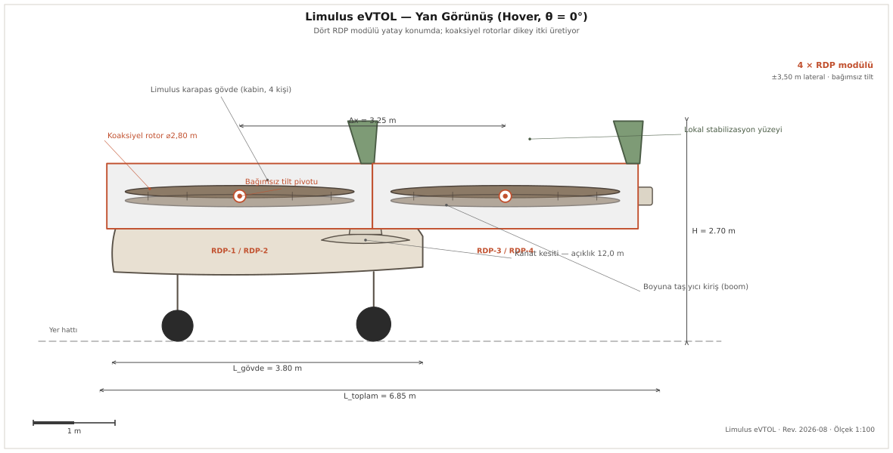
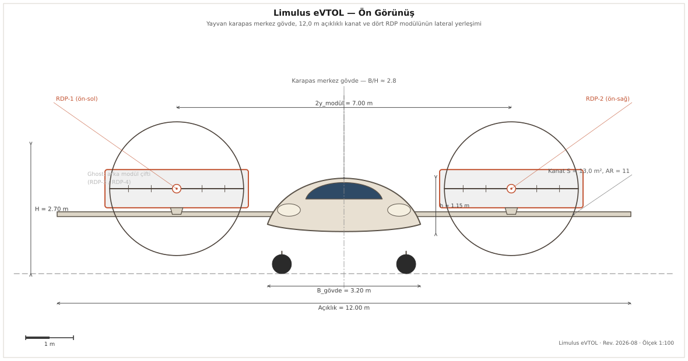
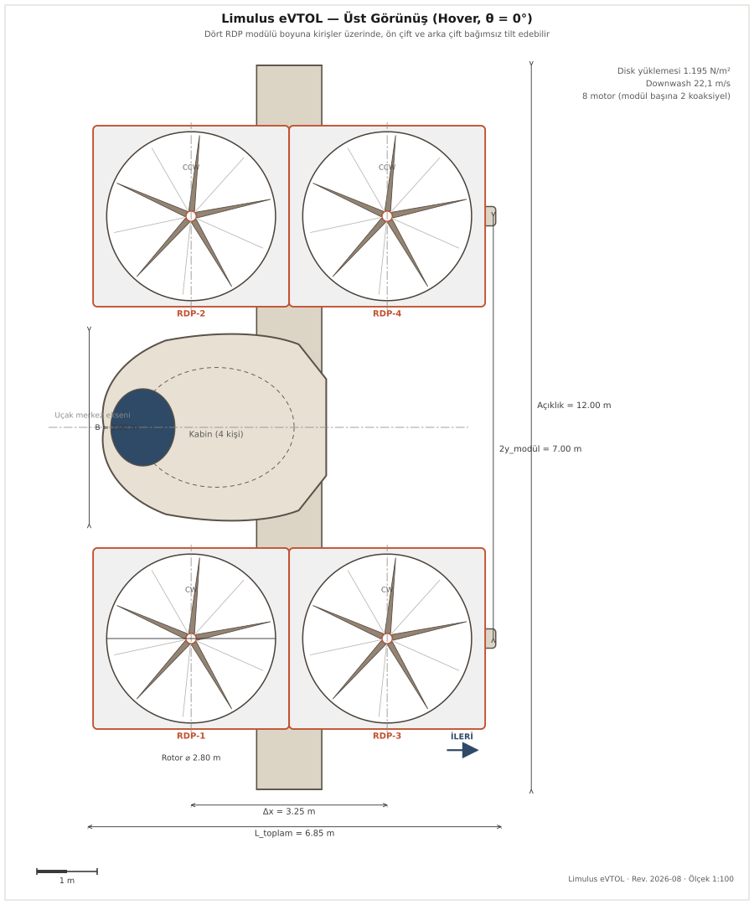

Senkron eğim, ikili eğim ve lift-cruise ayrı simülatörler değildir. Aynı altı serbestlik dereceli modelin, eylem uzayına kısıt konarak elde edilen hâlleridir. Bu, karşılaştırmayı bir yarışma olmaktan çıkarıp bir sınamaya çevirir, çünkü kısıtlının olurlu kümesi kısıtsızın içindedir ve kısıtlı bir varyant kısıtsızından iyi çıktığında bunun bir çözücü kusuru olduğu gösterilebilir.
LIMULUS
Dört bağımsız eğim ekseni. Kısıtsız hâl, diğer üçünü kapsar.
Senkron
Dört modül eğimlenir fakat tek kanaldan, hepsi aynı açıda.
İkili
Ön çift ve arka çift ayrı eğimlenir. Yanal simetrik kalır.
Lift-cruise
Eğim yok. Ayrı bir cruise itki birimi taşır, bayrak arkasında.
Görünüşler
Dört mühendislik çizimi de 2-CIZIM-MOTORU tarafından geometri.py'deki tek sözlükten üretilir. Bir boyut değişirse yalnız orası düzenlenir ve çizimler yeniden koşturulunca hepsi birden güncellenir, yani çizimde okuduğun sayı ile aşağıdaki tabloda okuduğun sayı ayrışamaz.



Tasarım noktası
Geometri
Başarım ve tahrik
Model katmanları
| Dosya | Ne yapar |
|---|---|
| arac.py | Altı serbestlik dereceli gövde dinamiği, katmanları birleştirir |
| rotor.py | Pal elemanı biçiminden itki ve tork, indükleme oranı, solidite |
| aerodinamik.py | Kanat ve gövde kuvvetleri, hücum açısı, sürükleme payları |
| aktuator.py | Eğim aktüatörü hız ve açı sınırları, gecikme |
| sensor.py | Gürültü ve gecikme modeli, bayrak arkasında |
| trim.py | Denge çözücüsü, asimetrik hâller dahil |
| ortam.py | Gymnasium ortamı, altı basamaklı müfredat, ödül tanımı |
| egitim_v2.py | Bu çalışma için yazılan PPO gerçeklemesi, hazır kütüphaneden alınmadı |
| temel_kontrolcu.py | Klasik kaskad referans kontrolcü, öğrenmenin karşılaştırma tabanı |